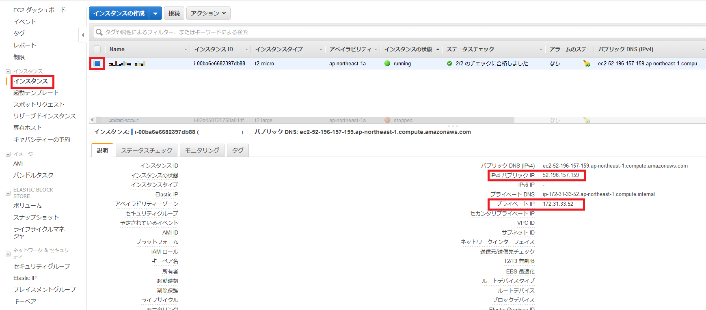
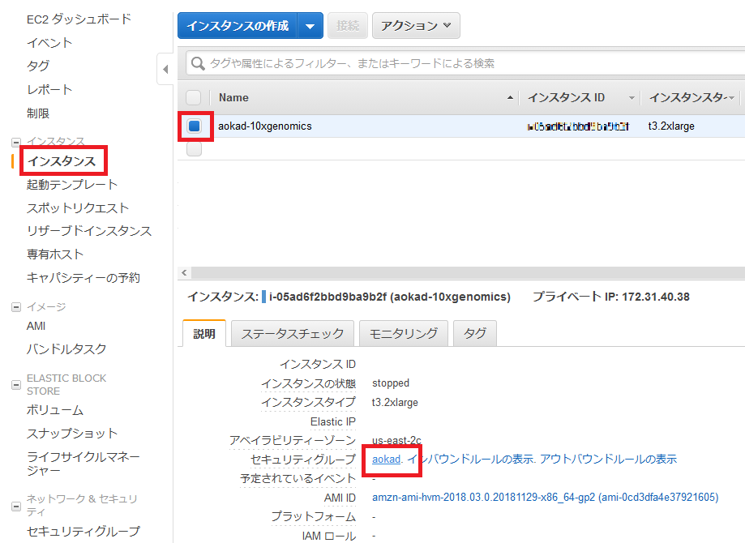
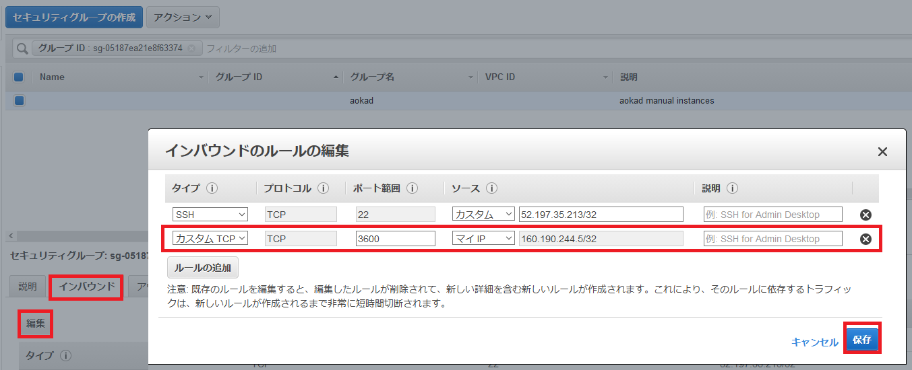

4. Option: ユーザインタフェース¶
cellranger パイプラインにはユーザインターフェースが用意されています。
公式ドキュメント： The Cell Ranger User Interface
ユーザインターフェースの場所は実行ログに記載されています。
$ cellranger mkfastq --id=tiny-bcl5 --run=./data/cellranger-tiny-bcl-1.2.0 --samplesheet=./cellranger-tiny-bcl-samplesheet-1.2.0.csv --qc --uiport=80
/work/cellranger-3.0.2/cellranger-cs/3.0.2/bin
cellranger mkfastq (3.0.2)
Copyright (c) 2019 10x Genomics, Inc. All rights reserved.
-------------------------------------------------------------------------------
Martian Runtime - '3.0.2-v3.2.0'
Serving UI at http://ip-172-31-40-38:3600?auth=sAsFRDQ4tBKJ9OGNG-7gJSWwPC9_8CfG3alhmyj0BC0 # <--- ★ ここです ★
Running preflight checks (please wait)...
（以下省略）
AWS インスタンスで実行している、内部ネットワークアドレスが表示されていますので、外部ネットワークアドレスに読み直してアクセスします。
インスタンスの外部ネットワークアドレスは以下のようにして取得することができます。
AWS マネジメントコンソールから ec2 サービスを選択します。
左端のメニューから「インスタンス」を選択した後、目的のインスタンスを選択します。
右下にインスタンスの情報が記載されていますので、そこから「IPv4 パブリック IP」を探します。
なお、内部ネットワークアドレスは「プライベート IP」という名前で記載されています。

外部ネットワークアドレスに読み替えるとユーザインターフェースの URL は以下のようになります。(説明用であり、アクセスできません)
# 内部ネットワークアドレスでの表示
http://ip-172-31-40-38:3600?auth=sAsFRDQ4tBKJ9OGNG-7gJSWwPC9_8CfG3alhmyj0BC0
# 外部ネットワークアドレスでの表示
http://13.58.138.49:3600?auth=sAsFRDQ4tBKJ9OGNG-7gJSWwPC9_8CfG3alhmyj0BC0
ブラウザで開くと以下のような画面が表示されます。

より詳しい解説は The Cell Ranger User Interface を参照してください。
注意１ セキュリティグループの変更
起動した AWS インスタンスは無制限に全世界に公開しているわけではなくアクセス制限を行っています。
今回は SSH ログインで使用する 22 番ポートのみアクセスを許可しています。
そのため、ウェブブラウザから 22 番以外のポートでアクセスするためにはセキュリティグループに対して新しくアクセス許可を追加する必要があります。
以下の手順で設定します。
AWS マネジメントコンソールから ec2 サービスを選択します。
左端のメニューから「インスタンス」を選択した後、現在のインスタンスを選択します。
右下にインスタンスの情報が記載されていますので、そこから「セキュリティグループ」のリンクをクリックします。

セキュリティグループの画面が表示されますので、「インバウンド」→「編集」とクリックして、セキュリティグループの編集画面を表示します。
「ルールの追加」ボタンをクリックして行を追加し、ポート番号を入力します。
アクセスを許可する IP アドレス範囲 (「マイIP」を選択すると、現在の自分のIPアドレスを設定できます) を入力したら「保存」を押してください。

注意２ 公開ポートを固定
cellranger パイプラインが設定する公開ポートはランダムなため、--uiport=3600 のように --uiport オプションをつけることで固定することができます。
ただし、Linux では TCP/IP ポート番号のうち 1024 未満は特権ポート (privileged ports) といい、特権プロセス（CAP_NET_BIND_SERVICE ケーパビリティを持つプロセス）でないとアクセスできません。
そのため、3600 など 1024 以上のポート番号を指定したほうがよいでしょう。
以上です。
不要になった AWS インスタンスは以下を参考に適宜停止するか削除してください。